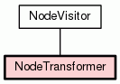

Class NodeTransformer
source code

A :class:`NodeVisitor` subclass that walks the abstract syntax tree
and allows modification of nodes.
The `NodeTransformer` will walk the AST and use the return value of
the visitor methods to replace or remove the old node. If the return
value of the visitor method is ``None``, the node will be removed from
its location, otherwise it is replaced with the return value. The return
value may be the original node in which case no replacement takes
place.
Here is an example transformer that rewrites all occurrences of name
lookups (``foo``) to ``data['foo']``:
class RewriteName(NodeTransformer):
def visit_Name(self, node):
return copy_location(Subscript(
value=Name(id='data', ctx=Load()),
slice=Index(value=Str(s=node.id)),
ctx=node.ctx
), node)
Keep in mind that if the node you're operating on has child nodes you
must either transform the child nodes yourself or call the
:meth:`generic_visit` method for the node first.
For nodes that were part of a collection of statements (that applies
to all statement nodes), the visitor may also return a list of nodes
rather than just a single node.
Usually you use the transformer like this:
node = YourTransformer().visit(node)
|
|
|
|
|
|
|
Inherited from object:
__delattr__,
__format__,
__getattribute__,
__hash__,
__init__,
__new__,
__reduce__,
__reduce_ex__,
__repr__,
__setattr__,
__sizeof__,
__str__,
__subclasshook__
|
|
Inherited from object:
__class__
|